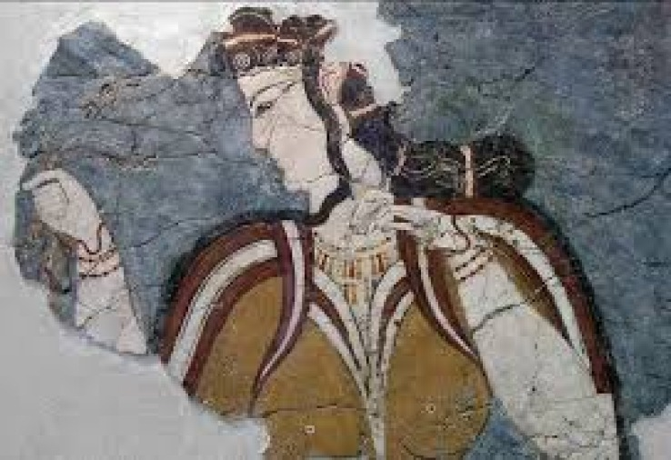

Догреческая эгейская цивилизация

Догреческая эгейская цивилизация: колыбель европейской культуры.
Эгейская цивилизация (III–II тыс. до н.э.) — древнейшая культура, существовавшая на территории Греции, островах Эгейского моря и западном побережье Малой Азии до прихода греков-ахейцев. Она включала три ключевые культуры: минойскую, кикладскую и микенскую, каждая из которых внесла уникальный вклад в историю Средиземноморья.
Догреческая эгейская цивилизация охватывает культуры бронзового века, существовавшие в Эгейском регионе до прихода греков, включая Минойскую, Кикладскую и ранние элладские культуры. Эти цивилизации, особенно минойская на Крите и микенская на материковой Греции, оставили богатое наследие в виде дворцов, поселений, искусства и ремесел, а также оказали влияние на формирование греческой культуры.
1. Минойская цивилизация (о. Крит, 2700–1450 гг. до н.э.)
Открытие и название.
Минойская культура была открыта британским археологом Артуром Эвансом в начале XX века при раскопках Кносского дворца. Названа в честь легендарного царя Миноса.
Характерные черты:
✔ Дворцовая экономика – гигантские комплексы (Кносс, Фест, Малия) служили религиозными, административными и торговыми центрами.
✔ Отсутствие крепостных стен – свидетельство мирного существования и господства на море.
✔ Письменность – иероглифическое письмо (XX в. до н.э.), затем Линейное А (не расшифровано) и заимствованное греками Линейное Б (рас-но в 1950-х).
✔ Фрески – яркие изображения дельфинов, "таврокатапсии" (прыжки через быка), женщин в пышных юбках ("парижанка").
✔ Религия – культ Богини-Змеи, священные рога (символы быка), пещеры и святилища на вершинах гор.
Гибель.
Около 1450 г. до н.э. минойцы пострадали от:
• Извержения вулкана на Санторини (Фера), вызвавшего цунами.
• Вторжения микенцев с материка, перенявших их культуру.
2. Кикладская цивилизация (острова Эгейского моря, 3200–2000 гг. до н.э.)
Особенности.
• Мраморные идолы – знаменитые схематичные статуэтки с сложенными руками (возможно, изображения божеств или предков).
• Города без дворцов – небольшие поселения с каменными домами (например, Филакопи на Милосе).
• Мореплавание – активная торговля обсидианом с Малой Азией и Критом.
Исчезновение.
Культура пришла в упадок из-за климатических изменений и экспансии минойцев.
3. Микенская цивилизация (материковая Греция, 1600–1100 гг. до н.э.)
Происхождение.
Создана греками-ахейцами, перенявшими минойские традиции, но с воинственным укладом.
Главные центры.
• Микены – город царя Агамемнона, с "Львиными воротами" и купольными гробницами ("толосы").
• Тиринф – цитадель с циклопическими стенами.
• Пилос – дворец Нестора, где найдены сотни глиняных табличек с Линейным Б.
Характерные черты.
✔ Крепости – мощные стены из гигантских камней ("циклопическая кладка").
✔ Военная элита – колесницы, бронзовые доспехи (как в "Илиаде").
✔ Погребальные маски – например, "Маска Агамемнона" (на самом деле старше Троянской войны).
✔ Торговля – контакты с Египтом, Хеттским царством, Сирией.
Гибель. (ок. 1100 г. до н.э.)
Причины упадка:
• Вторжение дорийцев – племен с севера, вооруженных железным оружием.
• Системный кризис – голод, восстания, распад торговых путей.
• "Бронзовый коллапс" – общий упадок цивилизаций Средиземноморья.
Наследие эгейской цивилизации.
Мифы – легенды о Минотавре, лабиринте, Троянской войне восходят к этим эпохам.
• Архитектура – элементы минойского стиля встречаются в более поздних греческих храмах.
• Письменность – греческий алфавит развился на основе финикийского, но опыт Линейного Б повлиял на учетные системы.
• Искусство – мотивы дельфинов, осьминогов и спиралей перешли в греческую вазопись.
Заключение.
Эгейская цивилизация — "мост" между Древним Востоком и классической Грецией. Ее исчезновение в XII в. до н.э. погрузило регион в "темные века", но именно на ее руинах выросла эллинская культура, ставшая основой Западного мира.
Интересный факт: Современные генетические исследования подтверждают, что критяне сохранили минойские гены, несмотря на смену языков и культур!